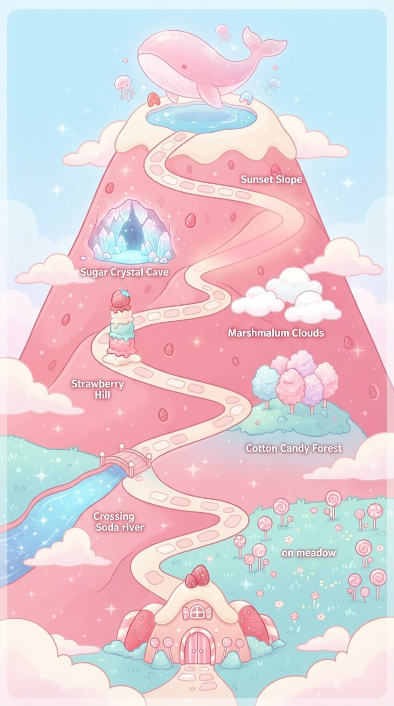
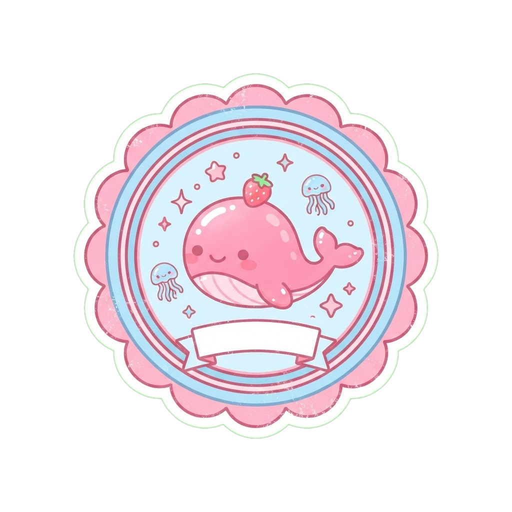

Gunung Permen Stroberi 🍓

Puncak Paus Jelly 🐋
Cap pendakian hari ini di sini

Pendakian Selesai 🍓
Mulai mendaki
Ketuk atau usap ke atas

Cap pendakian hari ini di sini

Mode atur titik. Geser tiap nomor ke lokasinya di peta. Posisi tersimpan otomatis.
💖 0